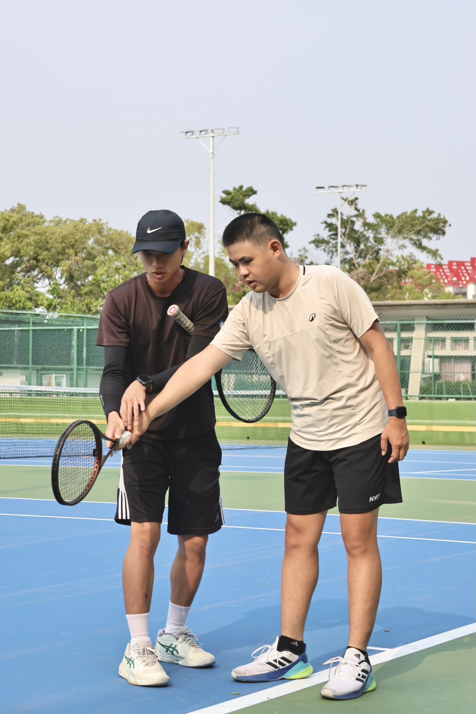
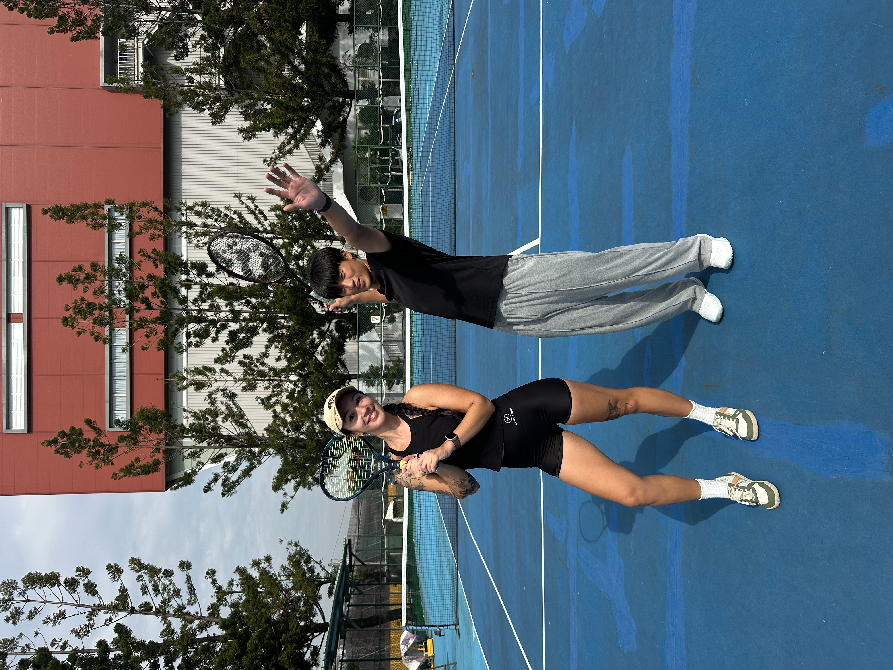
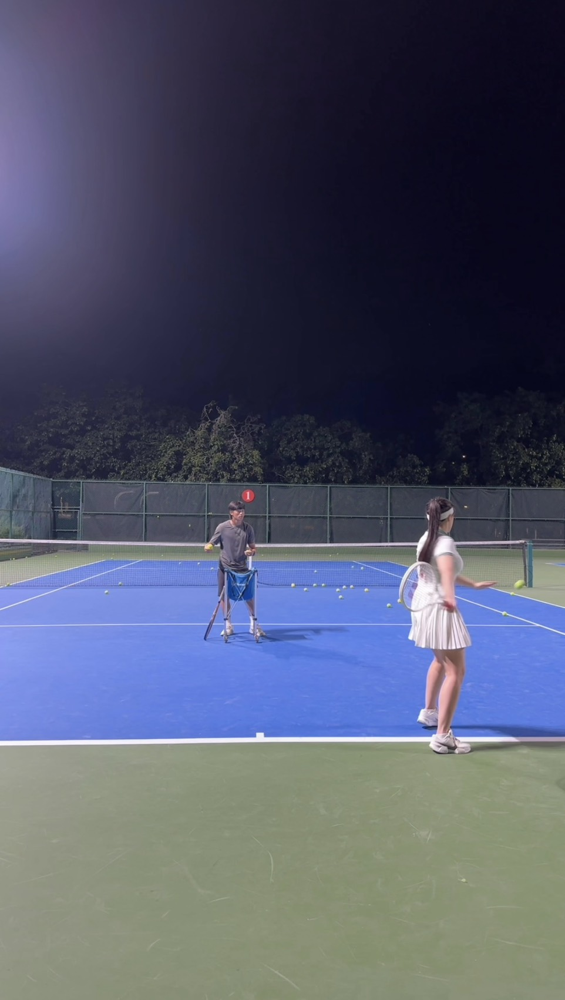

關於 JOIN 嘉義網球
嘉義、民雄與中正大學附近的網球教學
JOIN 嘉義網球由高旻紘教練提供嘉義地區網球課程，主要服務範圍包含中正大學附近、民雄、嘉義市與嘉義縣。課程適合第一次接觸網球的初學者，也適合想改善正手、反手、發球、步伐與比賽觀念的學員。
教學重視紮實基本功與細心引導，會依照學員年齡、程度與學習目標調整內容。無論你的目標是培養運動習慣、釋放壓力、提升技巧，或未來想參與比賽，都可以透過循序漸進的訓練建立信心與成就感。
教練經歷
- 高旻紘教練
- ITF 國際網球錦標賽巴基斯坦站雙打季軍
- 全國青少年排名賽單雙打冠軍
- 全國中等學校運動會高中團體亞軍
- Victo.ly 公開認證組單打亞軍
- 誌鈞盃全國公開組冠軍
- 嘉義市市長盃冠軍
- 嘉義市委員盃冠軍
- 中華民國網球協會 C 級教練
- 中正大學公開組（甲組）校隊隊長
- 中正大學一般組（乙組）校隊助教
- 參與學校 US PTR 網球計畫教練

嘉義網球課程介紹
💪 一對一 / 一對二網球課程
適合希望快速建立基礎、修正動作或準備比賽的學員。課程會依照個人程度安排正手、反手、截擊、發球、腳步與比賽觀念訓練，讓學員能在嘉義民雄與中正大學附近接受更個人化的網球教學。
🎾 成人網球興趣班
適合零基礎成人、上班族與想培養運動習慣的學員。課程重視基礎動作、安全擊球與實際對打樂趣，讓學員能在輕鬆的節奏中學會網球，並逐步建立穩定的運動習慣。
🧒 兒童網球基礎班（6–12 歲）
針對 6 至 12 歲兒童設計，透過兒童球、趣味遊戲與循序漸進的教學方式，培養孩子的手眼協調、移動能力、專注力與運動自信。課程會依照孩子狀況調整難度，不急著追求比賽，而是先建立興趣與正確動作。
🏃 網球進階訓練
適合已有基礎、希望提升穩定度與比賽能力的學員。課程內容包含擊球品質、移位、發球策略、接發球、比賽節奏與實戰觀念訓練，協助學員將單項技術整合到實際對打與比賽情境中。
嘉義網球課程常見問題 Q&A
Q：從來沒打過網球也可以參加嗎？
A：可以。JOIN 嘉義網球設有初學者課程，會從握拍、基本步伐與基礎擊球開始教學，適合第一次接觸網球的學員。
Q：需要自備球拍嗎？
A：初期可借用教練球拍，之後可依照個人程度、身高、力量與學習需求，建議適合的球拍與相關裝備。
Q：課程有哪些上課時間？
A：課程時段以預約為主，平日晚間與假日皆可洽詢。實際時間會依教練與學員可安排時段確認。
Q：孩子年紀還小可以學網球嗎？
A：歡迎 6 歲以上兒童參與，課程會搭配兒童球、趣味活動與循序漸進的教學方式，讓孩子先建立興趣與基礎動作。
Q：主要在哪裡上課？
A：目前以上課預約地點為主，主要服務嘉義民雄與中正大學周邊，也可依需求討論嘉義市與嘉義縣其他合適地點。
嘉義網球課程照片
以下為 JOIN 嘉義網球課程與練習照片，可作為了解課程氛圍與教學情境的參考。



上課地點
📍 目前以上課預約地點為主，主要服務嘉義民雄與中正大學周邊。若學員位於嘉義市、嘉義縣其他地區，也可以私訊討論合適的上課地點與時段。
報名方式
目前採取 Instagram 或 Facebook 粉絲專頁私訊報名。私訊時可以先提供希望上課時段、上課人數、是否有網球基礎，以及偏好的上課地點，方便安排合適課程。
期待與你在球場見面！
聯絡 JOIN 嘉義網球
📩 歡迎透過 Instagram 或 Facebook 私訊詢問課程與報名資訊。
可使用上方圖示連結報名、詢問上課時段，或觀看更多課程相關內容。